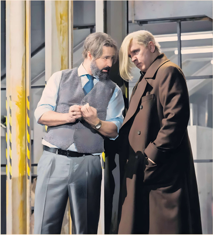

OPERA
Giulio Cesare in Egitto
Haus für Mozart, Salzburg
Shirley Apthorp

Sirens blare, and giant red texts urge us to seek shelter immediately. Nobody in Salzburg’s Haus für Mozart moves, because this is what we're here for: Dmitri Tcherniakov’s reimagining of the crisis that precipitates the action of Handel’s Giulio Cesare in Egitto. We're already in the bunker. Together.
Tyrants, siblings, lovers, royals, associates: everyone is thrown together in a series of interconnected concrete spaces. Every now and then, a bomb falls above with a terrifying thud, and the walls reverberate.
At first, Cornelia still finds time to fix her lipstick, while Cleopatra preens and flirts. By the end, everyone on stage is smeared in grime and traumatised — not because of the war above, but because of what these people do to one another below.
And although Tcherniakov earned a good storm of boos from the opening night traditionalists at his curtain call, this is the real heart of Handel’s opera.
The popular director has never tackled baroque music before, but he has fully grasped the concept of affect, the notion of action that propels its protagonist from one emotional extreme to the next. In his telling, Cesare is a self-assured ruler, Cleopatra a calculating seductress, her brother Tolomeo a cold-blooded psychopath, Cornelia (widow of Pompeo, Cesare’s rival) a domineering mother to the damaged, fragile Sesto.
Tcherniakov manages the action with skill, dramatic flair, and unfailing trust in the score, somehow conjuring endless surprises from familiar material. Countertenor Christophe Dumaux could have been born to play Giulio Cesare, delivering a beefily masculine account of the virtuosic role — a formidable achievement. Olga Kulchynska grows in stature as the evening progresses; her Cleopatra has immense character, depth and passion. Lucile Richardot has an oddly androgynous voice; her Cornelia shines more for her nuanced acting. Dumaux inevitably blows his fellow countertenors out of the water, with Yuriy Mynenko’s Tolomeo sounding initially insecure, and Federico Fiorio’s Sesto underpowered — though the latter reveals wonderful agility and delicacy in a voice that would be better suited to smaller venues.
Le Concert d’Astrée plays well enough for conductor Emmanuelle Haim, and she supports her singers faithfully, but her Handel is insipid and flat. Slow movements pool and stagnate; she seems to have no ability to shape leading voices with momentum, or phrase in a way that drives the music forwards. There's little love for the small moment, and no great insights into a score that demands better. Even the thrilling horn solo in Cesare’s famous hunting aria sounds strained and over-controlled — a moment that more mutual trust could have made electric.
When Tcherniakov’s staging seems to flatten, the fault lies with Haim; in other hands, this would be a consummately thrilling evening.
To August 17, salzburgerfestspiele.at